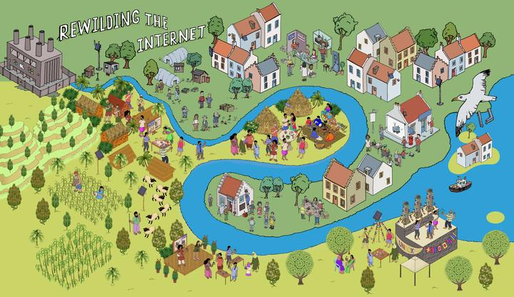

Making speculative futures work
by moving between real and imaged worlds.
16th October 2026. From a kitchen table at 7pm

Speculative futures. Big right now. The trouble is I’m not sure we’ve really figtured out how to use them outside of design. They have become an form of expression. Worlds are being built that are populated with objects. Narratives are crafted. Debates created. But what I’m not seeing is how they can be used outside of design. I mean really outside. As ways for engineers, lawyers, scientists, investigative journalists, architects, historians… you!
But a couple of weeks back I had a thought. Not on speculative design (I will get back to it, but first hear me out). It was on another well trodden design method. I was at a funding bootcamp meeting various engineers and scientists with ideas for spin-out companies they wanted to form on the thing they had made. This one brilliant engineer was saying that they felt daunted by the idea of contacting potential stakeholders of investors as theyu were stuck between 1) not really knowing who to contact and 2) not knowing what to say. The classic chicken and egg brain freeze. I realised that this was where Personas could come in. But this needed framing for a pure engineer. This was not design school 101. it needed something new. Here’s what I said. Finding a negative square of a negative number is impossible using real numbers - it will always be positive - unless we use the imaginary number “i”. This enables the the square of a negative number to remain negative. Without “i” you can’t solve it. In the same way. We can think of Personas as a way to enable us to “imagine” the person we are writing to, so that we can then write them a real letter. Then, the real person can be found to match the letter.
Speculative design could be used more in this way. As more of a tool than the result. This has happened indirectly throughout tech development. There’s a wonderful post here asking if Stanley Kubrick invented the iPad. But can we be more strategic about this with respect to the internet we want. We can’t take down Big Tech as we don’t have an alternative to Big Tech. We can’t regulate for an alternative to Big Tech as we don’t have an alternative to Big Tech. We’re stuck. -1 x -1 = +1. We need to create imaginary futures that are ways to represent the impossible, but use these to create real regulation and real forms of governance that can then allow these imagined internet futures to become real. Speculative Design could be to our real futures as to what i2 is to -1.
My idea is that we see both real and imaginary futures at the same time. That we use speculation to test these idea and create the conditions (regulation, policy, cultures, designs) that materialise them in the present. This way we don’t have to make the mistakes of irresponsible runaway tech that can’t be regulated. If we accept that everything we need to make a playful, caring and safe digital future already exists (I mean you can turn a disposable vape into a web server!!!), then what is required is a way of rewriting the narrative. Speculative Design is our imaginative number. Let’s put it to work!